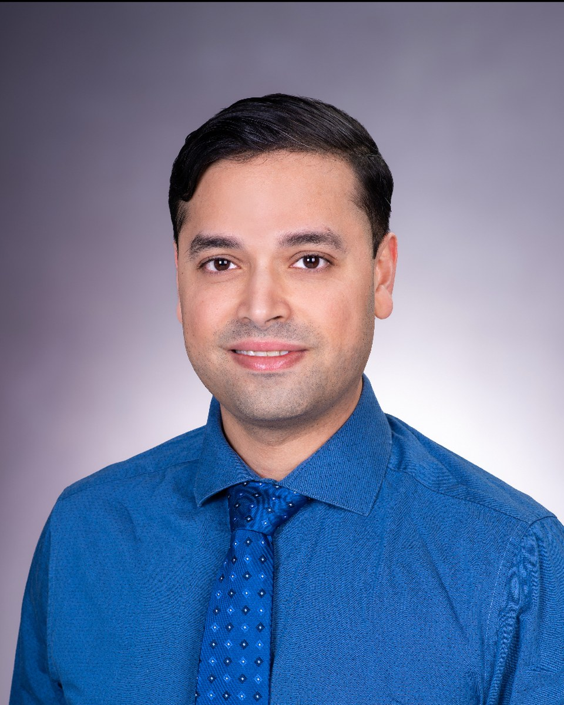

Board certification in Neurology with special qualification in Child Neurology.
Rare neuroimmune and white matter disorders
From diagnostic uncertainty to precise care and discovery.
I am a board-certified, fellowship-trained child neurologist focused on pediatric neuroimmunology, lifespan neurogenomics, rare white matter disorders, and referral navigation for complex neurologic disease.

AGVerified peer reviews across pediatric neurology, neuroimmunology, and rare disease.
Exploring links between genetic disorders and autoimmunity in the nervous system.
Clinical areas
Focused care across three overlapping realms.
Pediatric Neuroimmunology
Children, adolescents, and young adults with inflammatory disorders of the CNS.
- Pediatric and adolescent multiple sclerosis
- MOG antibody-associated disease
- Neuromyelitis optica spectrum disorder
- NMDA receptor encephalitis
- Seronegative autoimmune encephalitis
- Other pediatric autoimmune encephalitis syndromes
- Transverse myelitis, ADEM, and relapsing demyelinating syndromes
- CNS vasculitis, neurosarcoidosis, and inflammatory mimics
Clinical trial opportunities may be available through Arkansas Children's Research Institute .
White Matter Genetic Disorders and Rare Disease
Pediatric and adult rare disease evaluation where genetics, immunity, and white matter overlap.
- Leukodystrophies and leukoencephalopathies
- Undiagnosed white matter disorders
- Inborn errors of immunity with neurologic involvement
- Monogenic mimics of neuroinflammatory disease
- Rare neurogenetic and neuroimmune overlap syndromes
- Adult-presenting and lifespan white matter disorders
- Whole-exome, whole-genome, and RNA-sequencing interpretation
I am helping build a multidisciplinary neurogenetics clinic with genetics colleagues.
General Child Neurology
Longitudinal neurologic care for children with motor, tone, headache, and diagnostic needs.
- Cerebral palsy
- Hereditary spastic paraplegia
- Spasticity management
- Baclofen pump care and coordination
- Pediatric migraine and headache disorders
- Complex pediatric neurologic presentations
Neuroimmunology Neurogenomics Alliance
NINGA brings rare neuroimmune and neurogenomic cases into sharper focus.
NINGA is a developing professional forum for rare disorders at the intersection of immune dysfunction, genetics, and white matter disease.
- Variant-to-mechanism discussion
- Shared learning around rare presentations
- Research readiness for complex neuroimmune genetics
Selected publications and writing
Recent work.
Monogenic Mimics of Neuroinflammatory Phenotypes in Children and Young Adults
Neurology Genetics, 2025.
Read the paperImplementing a Guided VR for Neuroanatomy in Neurology Residency
Advances in Physiology Education, 2026.
Read the paperDoximity Op-Med
Commentary and conference writing, including ZACTRIMS coverage.
View author pageFor clinicians
Referral navigation
This personal website is not a referral portal and cannot accept protected health information. Physicians seeking pediatric neurology or neuroscience referral information should use the public Arkansas Children's website or call Arkansas Children's and ask for Neurology or Neurosciences.
Contact
Start a conversation.
For research, education projects, invited talks, or professional correspondence, email is the best first step. Please do not include patient identifiers or protected health information.